Ilustraciones-Nobel
 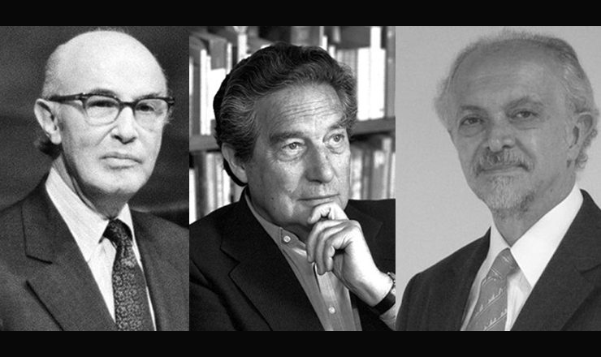
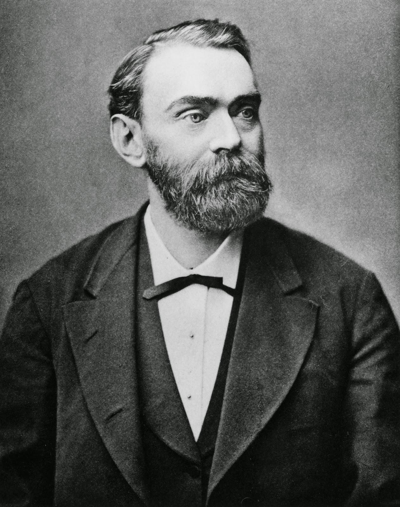
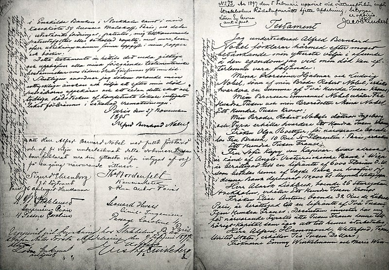
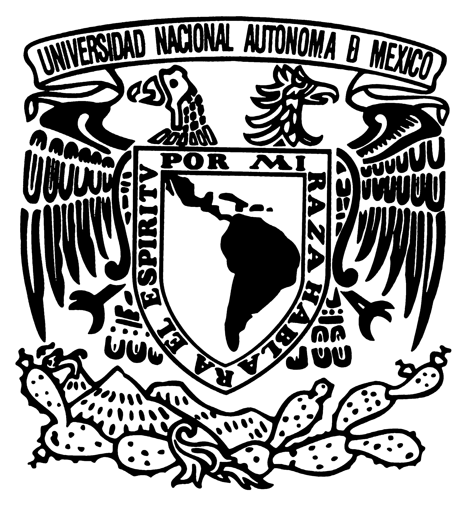
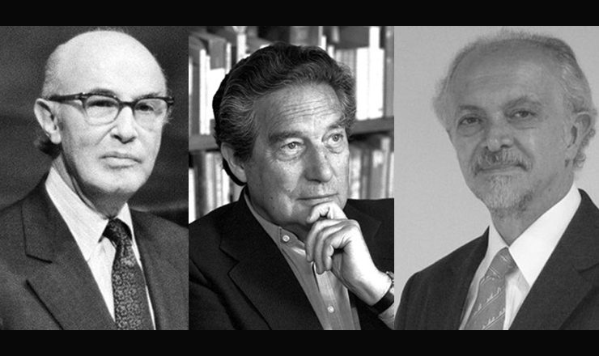
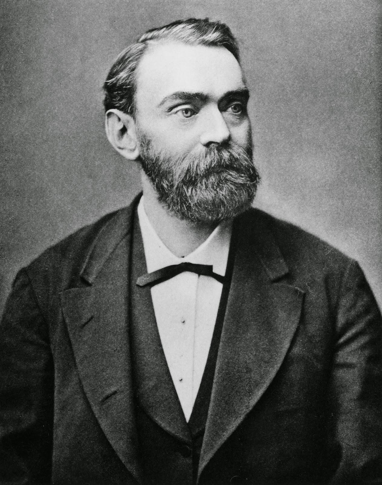
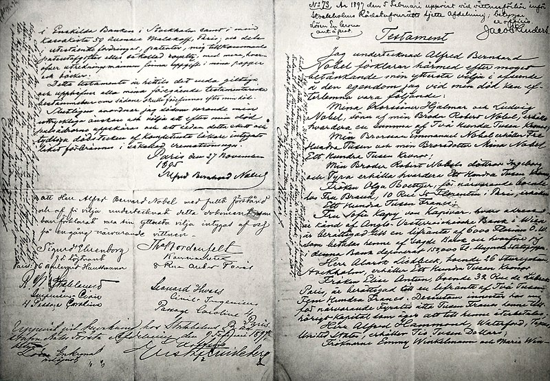
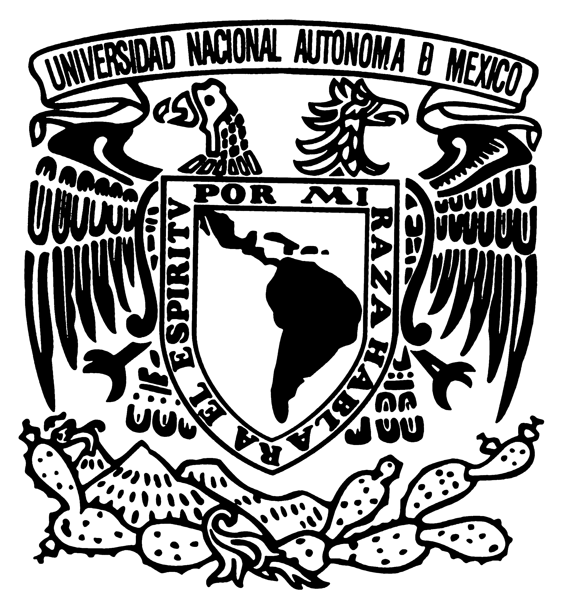
El Premio Nobel es un galardón internacional que se otorga cada año para
reconocer a personas o instituciones que hayan llevado a cabo investigaciones,
descubrimientos o contribuciones notables a la humanidad en el año anterior o en
el transcurso de sus actividades. Los premios se instituyeron en 1895 como última voluntad de Alfred Nobel,
industrial sueco, y comenzaron a entregarse en 1901 en las categorías de Física,
Química, Fisiología o Medicina, Literatura y Paz.
Los premios se entregan en forma anual. Cada persona o institución laureada recibe
una medalla de oro, un diploma y una suma de dinero. Esta última, determinada por
la Fundación Nobel, en 2013 ascendió a los 8 millones de coronas suecas, equivalente
a unos 874 000 euros.
El premio no puede otorgarse en forma póstuma, a menos que el
ganador haya sido nombrado antes de su defunción. Si el premio es compartido,
la cuantía de dinero se dividirá entre los ganadores, que no podrán ser más de tres personas.
Alfred Nobel nació el 21 de octubre de 1833 en Estocolmo, Suecia, en el seno de una familia de ingenieros. Fue químico, ingeniero e inventor. En 1894 compró Bofors, una empresa siderúrgica de hierro y acero que convirtió en un importante fabricante de armamento. Nobel fue una figura conocida por hacer uso de la nitroglicerina como precursora de muchos otros explosivos militares sin humo, especialmente la cordita, y acabaría amasando una fortuna durante su vida gracias a sus 355 inventos, entre los que se encuentra la dinamita, el más famoso. Sin embargo, también arrastró sentido de la culpabilidad por el mal que sus invenciones pudieran haber ocasionado a la humanidad. Nobel escribió varios testamentos en vida; el último poco más de un año antes de morir, que firmó el 27 de noviembre de 1895 en el Club Sueco-Noruego de París. Para sorpresa generalizada, el último testamento de Nobel especificaba que su fortuna debería emplearse en crear una serie de premios para quienes llevasen a cabo "el mayor beneficio a la humanidad" en los campos de la física, la química, la fisiología o medicina, la literatura y la paz
Las malas lenguas hablan de dos posibles causas para que Alfred Nobel tuviera desencuentros con esta ciencia y la olvidara a propósito, como si de una pequeña venganza se tratara. ¿Cuernos o enemistad con un matemático sueco? El primero de los posibles motivos está relacionado con unos cuernos. Se dice, se cuenta, se rumorea que la mujer de Alfred le puso los cuernos con un matemático y que Nobel, desencantado con su historia de amor, decidió olvidarse de las matemáticas. Pero la historia no se sostiene: Alfred Nobel nunca estuvo casado y de las parejas que tuvo, ninguna tuvo una relación con un matemático. O, al menos, no se conservan documentos que así lo acrediten. La otra opción para justificar la falta de un Nobel para las Matemáticas es una enemistad con Gösta Mittag-Leffler, un ilustre matemático sueco. La verdad es que esta versión tampoco se sostiene porque cuando el joven Mittag-Leffler comenzaba a sobresalir en esta ciencia, Nobel ya no vivía en Suecia puesto que se marchó muy joven del país. Sin embargo, la verdad es que no parece haber ningún tipo de venganza en la no existencia de esta categoría. Ninguna de las posibles causas es la real de que no exista este premio. La realidad es otra bien distinta y mucho más fácil: Alfred se olvidó de las matemáticas. Es bastante probable que el inventor de la dinamita no se tomara en serio esta ciencia y la considerara más una herramienta que usar para desarrollar otras ciencias que como un campo de estudio como tal. Aunque no podemos saberlo a ciencia cierta. No obstante, hay que tener en cuenta que otros campos de investigación como la biología o la geología tampoco cuentan con un premio propio. No obstante, que no exista un Premio Nobel para esta ciencia no significa que no tenga reconocimiento. Para los matemáticos hay otros premios que son considerados como el Nobel de Matemáticas: la Medalla Fields y el Premio Abel, creado por el Rey de Noruega.
Otorgado anualmente a personas, grupos o instituciones que hayan realizado aportes excepcionales y significativos a la humanidad en seis diferentes categorías temáticas: física, química, fisiología (medicina), literatura, economía y el premio de la paz (activismo social, beneficencia o similares). Las instituciones encargadas de elegir a los ganadores en cada área son la Academia Sueca de las Ciencias (química, física y economía), el Instituto Karolinska (medicina), la Academia Sueca (literatura) y el Comité Central del Nobel (paz). Los cinco primeros se otorgan en Estocolmo, Suecia, mientras que el último se entrega en Oslo, Noruega. Todas las actividades vinculadas con el premio son administradas por la Fundación Nobel.
Anualmente la fundación se encarga de hacer la petición formal de candidatos. Posteriormente, las academias, organizaciones y literatos destacados de cada país se encargan de mandar sus postulaciones.
ser poseedor de una trayectoria cónsona, constante y que, según el fundador del premio, Alfred Nobel, la obra haya dado “el mayor beneficio a la humanidad”.
Tras la solicitud de las postulaciones por parte del organismo rector, los nombres de los aspirantes son recibidos hasta el 1ero de febrero. Lo normal es que lleguen miles de propuestas. Los dos meses posteriores, la Academia se encarga de hacer una depuración exhaustiva hasta llegar a 20 candidatos. Si bien se puede decir que estudian la carrera y obra de cada escritor para saber quién está capacitado para estar dentro de este grupo selecto, la verdad es que no se sabe a ciencia cierta cuáles criterios son aplicados para determinar quien pasa este primer crucial filtro.
El mes de abril y mayo transcurren con otro recorte que lleva de 20 a 5 la cantidad de postulados. De allí en adelante, tras el filtro, se estudian a fondo las obras de los escogidos, y en octubre por medio de la votación del Comité Nobel se decide quién ha de pasar a la historia de las letras de la humanidad. Es importante acotar que gana aquel escritor que reciba más de la mitad de los votos. Otro aspecto un poco extraño es que nadie puede ganar si no ha estado postulado, como mínimo, dos veces al premio. Por ende, ningún nuevo candidato podrá ser acreedor del Nobel de Literatura, aunque su obra diga lo contrario. Ahora es comprensible el porqué solemos escuchar todos los años los nombres comunes entre los posibles ganadores.
Tres egresados de la UNAM han sido merecedores del Premio Nobel. El primero de ellos, Alfonso García, obtuvo el Nobel de la Paz en 1982. Posteriormente, en 1990, Octavio Paz fue nombrado Nobel de Literatura. Finalmente, Mario Molina obtendría el Nobel de Química en 1995.
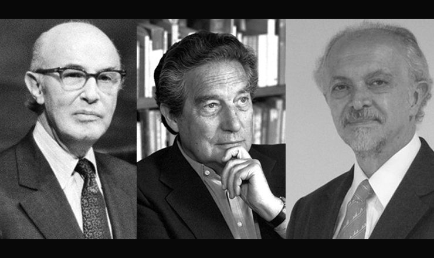
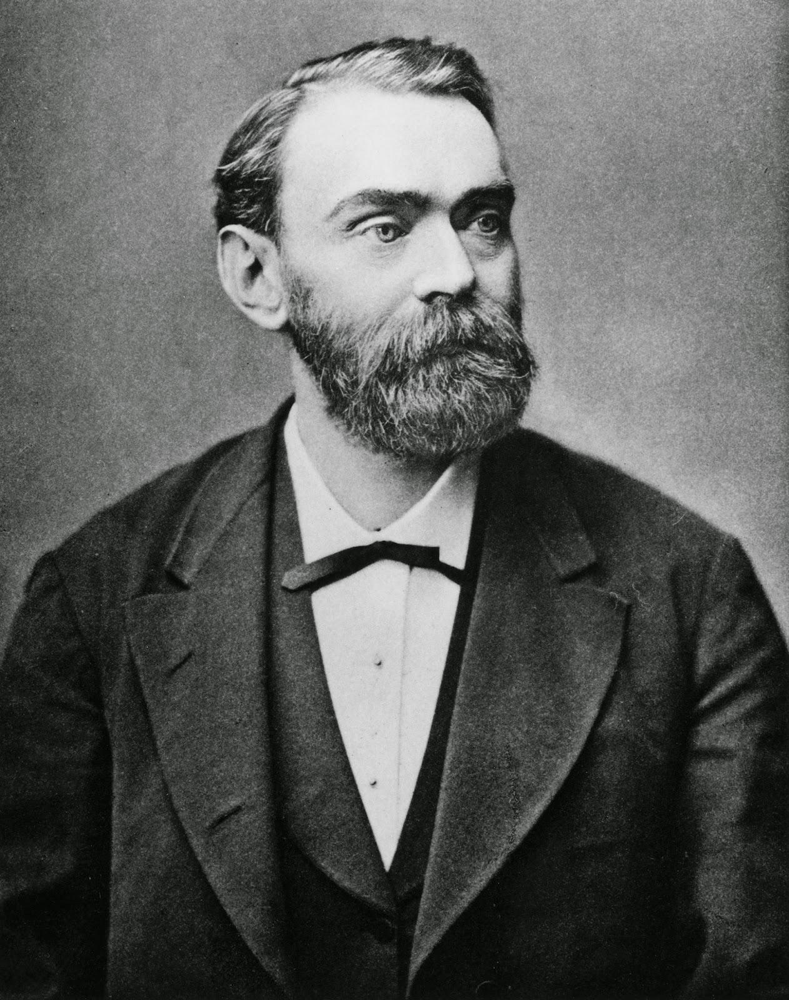
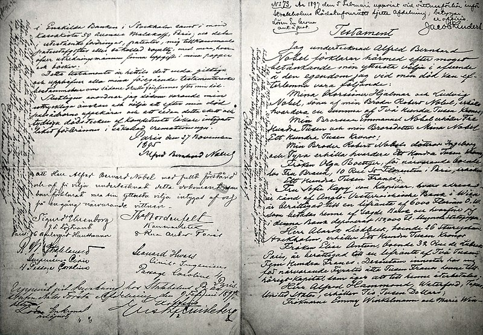
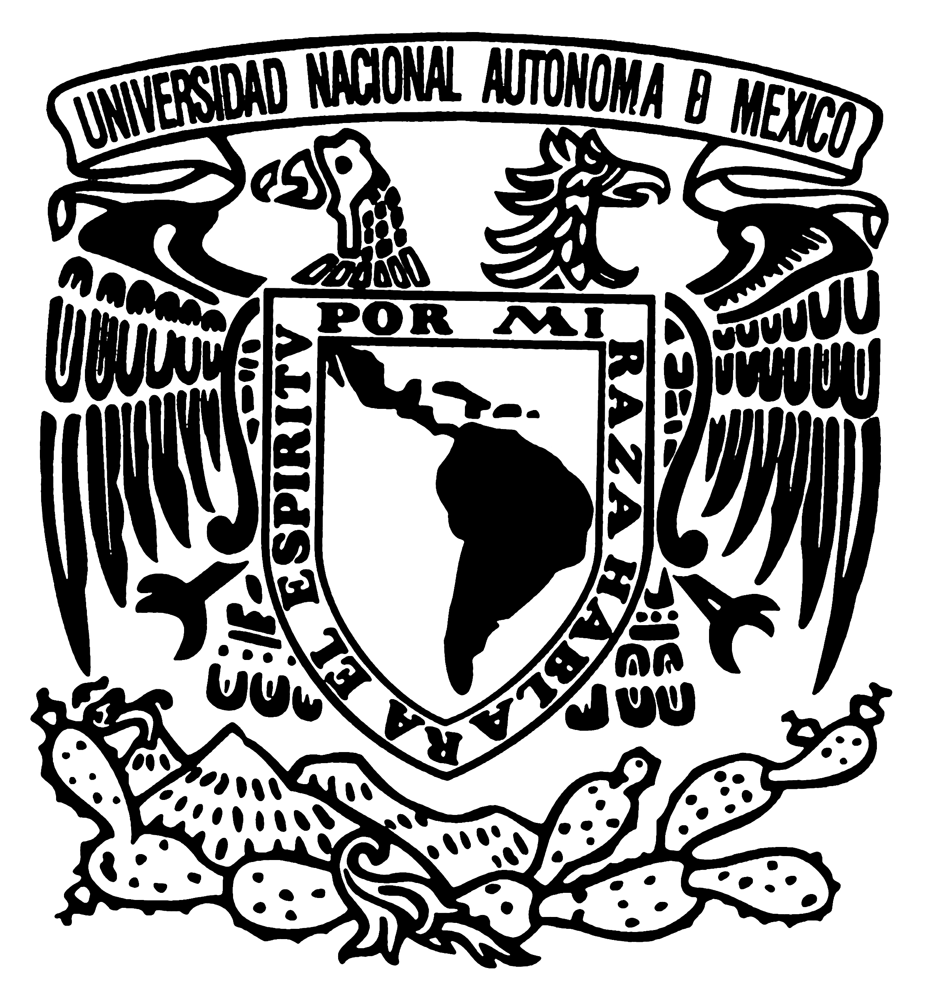